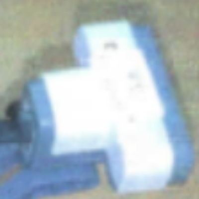
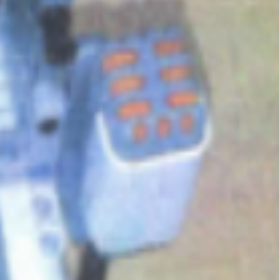
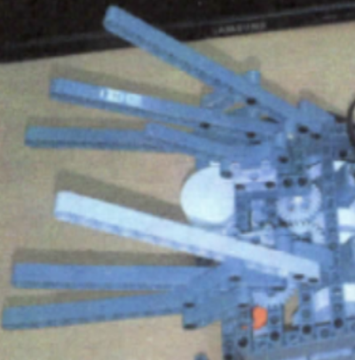
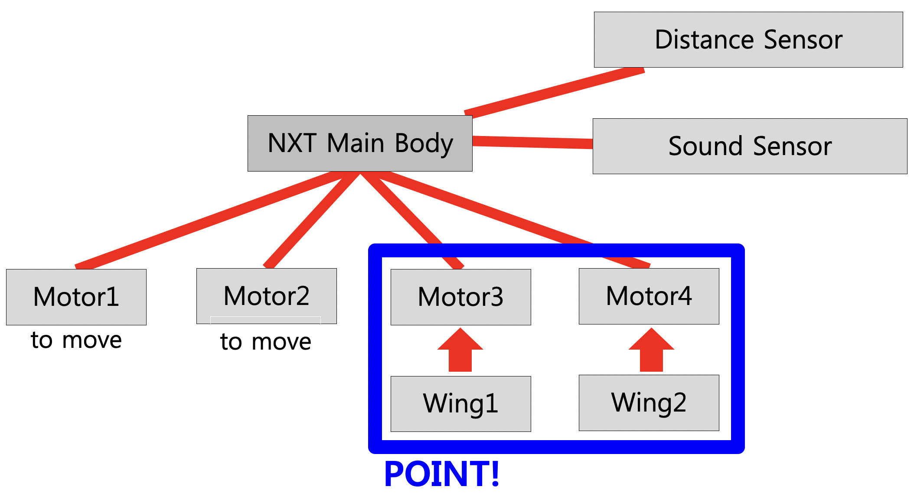
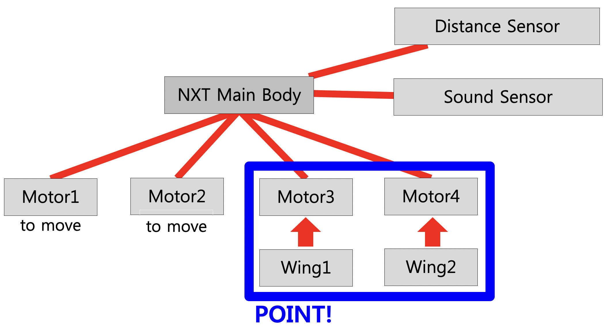

구현 기능

|
이동 기능 평소에는 전진하지만, 벽과 가까워지거나 소리를 감지하면, 후진 후 우회전 합니다. |
|  |
거리 감지 기능 거리 감지 센서로 벽과 가까워지는지 감지합니다. |
|  |
소리 감지 기능 소리 감지 센서로 큰 소리가 들리는지 감지합니다. |
|  |
날개 흔드는 기능 후진 후 우회전 할 때 날개를 흔들면서 파닥입니다. |
배경과 목적
프로그래밍 수업 시간에 RobotC 팀 프로젝트가 있었습니다. 창의적인 로봇을 만들어서 사람들한테 서비스를 제공하기 위해, 로봇 공학자가 될 것에 대비하기 위해 저희들만의 로봇을 제작하게 되었습니다.
프로그래밍 수업 시간에 RobotC 팀 프로젝트가 있었습니다. 창의적인 로봇을 만들어서 사람들한테 서비스를 제공하기 위해, 로봇 공학자가 될 것에 대비하기 위해 저희들만의 로봇을 제작하게 되었습니다.
배운 점
- 모터, 거리 감지 센서, 소리 감지 센서를 활용하는 법을 알게 되었습니다.
진행 절차
- 선생님이 준 조립 설명서를 보고 로봇을 조립했습니다.
- 로봇의 기능을 살펴보고 어떤 기능을 추가할지 고민하다가, 소리를 감지하면 날개를 흔드는 기능을 추가하기로 하였습니다. 따라서, 소리 감지 센서를 추가로 달았습니다.
- 선생님이 주신 프린트물에 모터 조종 예제가 있었는데, 이 예제를 수정해서 소리 또는 거리를 감지하면 모터를 제어해서 날개를 흔들도록 하였습니다.
- 이렇게 해서 원하는 프로그램을 구현할 수 있었습니다.
담당한 역할 및 가장 노력한 점
프로그램 구현 총괄 담당 및 공작새의 작동 원리를 RobotC로 구현
프로그램 구현 총괄 담당 및 공작새의 작동 원리를 RobotC로 구현
전체 구조


사용 기술
RobotC
RobotC
개발 환경
RobotC
RobotC
부연 설명
- 2012년 군포e비즈니스고등학교 e-디지털콘텐츠과 프로젝트 발표회에 출품해서 우수상을 받았습니다.